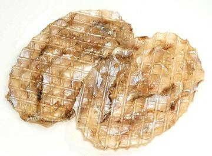
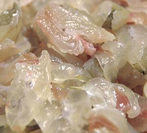

Filefish are mostly tropical reef and seaweed bed fish, but some live in temperate zones. They range worldwide, but the largest populations are around Australia, where they are considered pests. They are mainly fished in East and Southeast Asia. Filefish have a strong spine at the top of their head, which can be folded back (as shown in the photo) or extended straight up. They have a skin covered in rough, non-overlapping scales. Filefish skins have been used as sandpaper in woodworking. Some Filefish eat only algae, but others eat small invertebrates, jellyfish, coral polyps and similar. Filefish are not kosher - as for halal, scholarly opinion varies in the extreme.
The photo specimen (Stephanolepis cirrhifer) is one of the best known species, ranging from southern Japan, along western Taiwan to the East China Sea. It can grow to 12 inches long, and is a highly commercial catch, but IUCN Red List LC (Least Concern). Vast numbers are now bred in hatcheries to increase the population, particularly for the large Korean market. Photo by Izuzuki distributed under license Creative Commons Attribution-ShareAlike 3.0 Unported.
More on Varieties of Fish
(very large page).
Filefish is always skinned and filleted. I have seen a photo of a filefish being skinned, showing the skin cut across the top and cut or torn behind the head, then simply pulled off from the top down. The keel under the body cavity is then pulled down to remove the innards. The fillets can then be cut the usual way, but are very thin.
 [Jwichi (Korea)]
Most filefish fillets are seasoned and dried for use as a snack. Dried fillets are very popular in Korea and Southeast Asia. The photo specimen was labeled as from Thailand, but the label was in a Korean style - not surprising as Thailand and Vietnam export dried filefish to Korea, where the demand is very high. Ing: filefish, salt, sugar. These dried fillets were typically 4-3/4 x 3-1/4 inches and 0.08 inch thick.
Cooking: Dried fillets are held over a gas flame or
similarly toasted until well heated and softened. They are then cut into
strips and eaten as a warm snack. Kitchen shears work best for cutting
up these fillets. The dried fish smell disappears, and they are quite
tasty, if you don't mind them being a little chewy.
 [Jwichi hoe (Korea); Kawahagi sushi (Japan)]
Fillets may be used fresh for sushi and sashimi, in Japan. Filefish nigiri sushi is a slice of the fish over a lump of sushi rice, usually topped with a piece of its liver and some grated daikon. The fillet is also used without rice for fancy sashimi plates.
In Korea, raw filefish is prepared in a manner called Jwichi hoe
(photo to the left), but I have not been able to find anything on the
exact manner of preparation.
Photo by creepyblues distributed under license
Creative Commons
Attribution Share-Alike v2.0 Generic.